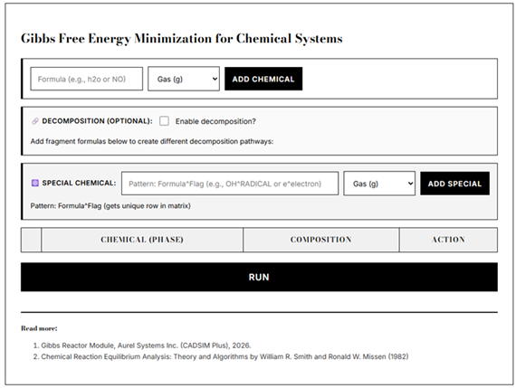
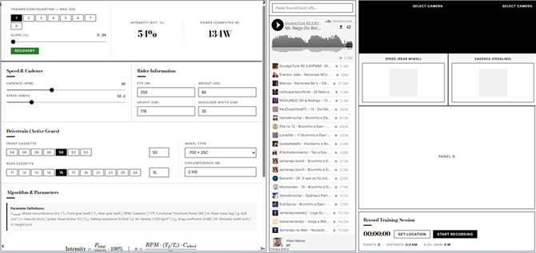
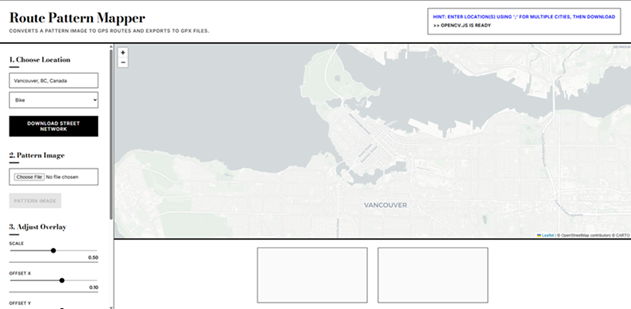
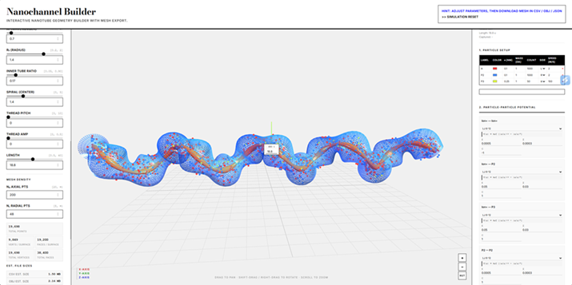
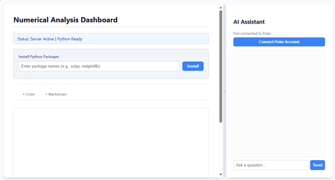
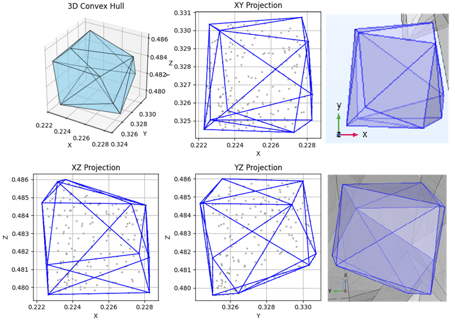
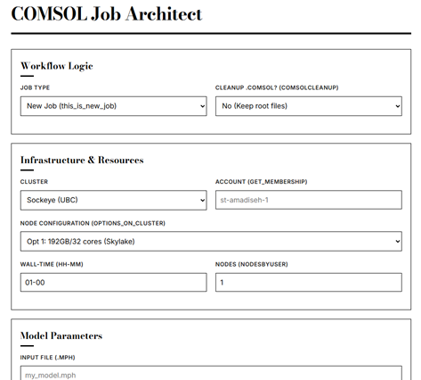
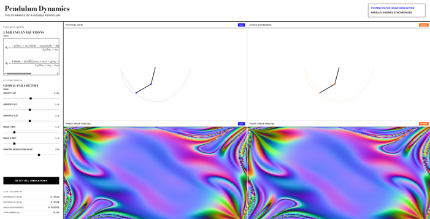
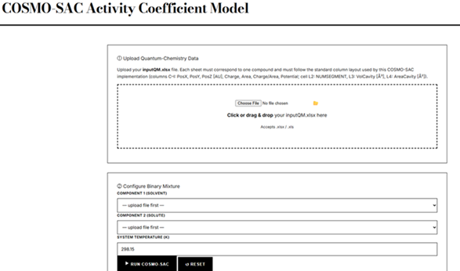

A web-based tool for analyzing chemical reaction systems and Gibbs free energy minimization.
This is a demo of the Gibbs Reactor Module in CADSIM Plus (Aurel Systems Inc.). For the simplicity of this demo, all chemicals are treated as ideal gases, and their thermodynamic properties are pulled from the Shomate thermodynamic database provided by the NIST.
Standard Chemical Input
- Enter chemical formulas with phases (gas, liquid, solid, aqueous)
- Formulas are parsed using a periodic table (valid elements only)
- Drag-to-reorder entries
Decomposition Pathways
- Mark chemicals that decompose into fragments
- Add multiple fragment formulas to create different decomposition sequences
- Each pathway subtracts its fragment until any atom reaches zero
- Automatically generates intermediate compounds
Special Chemicals
- Add non-standard species using the pattern: Formula^Flag(phase)
- Example: OH radical: OH^.(aq) or hydrated electron: e^-(aq)
- Gets a unique row in the matrix for tracking
Element Support
All 118 periodic table elements are supported (H through Og).
References
- Gibbs Reactor Module, Aurel Systems Inc. (CADSIM Plus).
- Chemical Reaction Equilibrium Analysis: Theory and Algorithms by William R. Smith and Ronald W. Missen (1982)

A dynamic, single-page dashboard designed for indoor cycling using my Minoura MAG-500 bike trainer.
Note: For camera detection to work, you have to open the .html file locally.
This app utilizes a power model to estimate workout intensity based on environmental and mechanical factors:
- Gravitational Power: Calculates power required to overcome slope/grade.
- Rolling Resistance: Accounts for tire friction based on total mass.
- Aerodynamic Drag: Estimates wind resistance using rider height and shoulder width.
The settings include:
- Trainer Config: Eight magnetic resistance levels (L1–L8) mapped to specific slopes.
- Drivetrain: Selection for Front Ring (50T/34T) and Rear Cassette (11T–34T) gears.
- Wheel Size: Presets for various tire sizes (700x23C up to 700x32C) with manual circumference input.
- Rider Profile: Defaults are FTP 250W, Mass 85kg, Height 178cm, Shoulder Width 31cm.
- Recording: Can record a simulated workout and export a GPX file readable by other cycling apps such as Strava.

A web app that takes a color-coded pattern image (e.g., a design, logo or similar), overlays it onto a (multi)-city street network (downloaded from OpenStreetMap), extracts GPS coordinates for each color layer, and outputs the result as one or more GPX track files — ready to be used in any GPS-capable navigation apps.
Note: To run the .html app locally, you need to intiiate a server first. To do so, open terminal and run python -m http.server 8000 in the folder where the file is saved. Then use this link: http://localhost:8000/_RoutPlanner.html.

This app was originally written as an ipython notebook.
Here is what it does:
.gpx file per color layer.
Key Parameters Reference
| Parameter | Location | Effect |
|---|---|---|
place_name |
Stage 1 | City/region for the street network |
network_type |
Stage 1 | Road type filter (bike, walk, drive) |
filename |
Stage 2 | Input pattern image path |
min_pixels_threshold |
Stage 3 | total_pixels × 0.001 — minimum pixel count to register a color |
outermost_color |
Stage 6 | Color used to anchor position; processed first |
scale_factor_x/y |
Stage 6 | Pattern size relative to map extent |
position_offset_x/y |
Stage 6 | Pattern placement offset from bottom-right corner |
threshold_val |
Stage 6 | Defined but available for custom threshold extensions |
Notes and Limitations
color_ranges if the pattern image uses slightly off-hue colors.
An interactive browser-based tool for parametric design and 3D visualization of nanochannel geometries, mesh generation in real time, and export.
Now supports MD Simulations.

This is a lightweight, single-file web application that mimics the Jupyter Notebook experience locally. It leverages Pyodide to run a full Python environment directly in browser without needing a remote backend.
.html file here.
It also has a sidebar assistant powered by Puter.ai that sees current code and output to provide debugging help or code suggestions.
.html file.bash
python -m http.server 8000http://localhost:8000/FILENAME.html.

This is a local RAG pipeline using Ollama, ChromaDB, and LangChain.
Workflow reference
Ollama installed and have pulled the required models (embedding and LLM) (for example: ollama pull gemma4:latest) for the scripts to work.Ollama must be running in the background: ollama serve.--help to see all available options for each script.
Steps to prepare the WSL environment
sudo apt update && sudo apt upgrade -y sudo apt install -y build-essential python3-pip python3-venv curl git libmagic-dev poppler-utils tesseract-ocr.python3 -m venv venv source venv/bin/activate. pip install -r requirements.txt.https://ollama.com/download or curl -fsSL https://ollama.com/install.sh | sh.ollama pull gemma4:latest and ollama pull nomic-embed-text.
Required packages (requirements.txt):
langchain
langchain-community
langchain-core
langchain-ollama
chromadb
python-dotenv
langchain-unstructured
langchain-text-splitters
langchain-community
langchain-core
langchain-ollama
chromadb
python-dotenv
langchain-unstructured
langchain-text-splitters
Usage Examples
# Build a new database
python rag.py --task=build-db --source-dir=PATH --database-dir=PATH --embedder=MODEL [--size=small|medium|large]
# Append to existing database
python rag.py --task=append-db --source-dir=PATH --database-dir=PATH --embedder=MODEL [--size=small|medium|large]
# Query the database
python rag.py --task=query --database-dir=PATH --embedder=MODEL --ollama-llm=MODEL --question="..."
# Interactive query
python rag.py --task=query --database-dir=PATH --embedder=MODEL --ollama-llm=MODEL --interactive
# Query with prompt file
python rag.py --task=query --database-dir=PATH --embedder=MODEL --ollama-llm=MODEL --prompt-file=FILE
This is a java script in COMSOL Application Method designed to automate 3D geometry construction from point cloud data into COMSOL's native domains.
The point cloud data are generated using the python script that projects a convex hull to the cloud points and generates respectives faces for each set of points in a triangulations.

This script is a Bash-based utility designed to automate the configuration and submission of Slurm-managed jobs. It handles cluster-specific hardware architectures, resource allocation logic, and job recovery.
It is specifically tailored for COMSOL Multiphysics simulations. The script primaryly manages the entire workflow from environment validation to job submission on various Canadian HPC clusters (before their migration to new systems).
The script builds the final COMSOL call as a concatenated string of the following components:
${CALL_COMSOL_AS} batch -mpibootstrap slurm \
-inputfile ${inputmph} \
-outputfile ${outputmph} \
-batchlog ${logfilepath} \
-tmpdir ${TMPDIR} \
-recoverydir ${RECDIR} \
-alivetime 15 \
${COMSOL_EXTRA_} \
${COMSOL_CONTINUE_} \
${COMSOL_PARAMS_} \
${COMSOL_METHOD_}

This is a web app to visualize the complex, non-linear dynamics of a double pendulum by integrating the Lagrangian equations of motion. It is an iconic example of deterministic chaos in physics: the Butterfly Effect. It demonstrates how microscopic initial perturbations between nearly identical systems lead to exponential divergence, transforming predictable motion into a complex, chaotic fractal.

This is a suite of MATLAB code for the COSMO-SAC (COSMO Segment Activity Coefficient) model.
.html version of the calculator can be found here.MATLAB code can be found here, with a required input file.
Usage Instructions
inputQM.xlsx) must have sheets named after your components (e.g., '67-63-0-2d' or 'Z1') containing the required QM output data.SYSTEMP (Temperature in Kelvin).ListCOMP with the sheet names from your inputQM.xlsx file.eqCOSMO.m.
Outputs
sProfiles.xlsx: Stores the calculated sigma-densities and profiles for each component.MixGamma.xlsx: Stores the final matrix containing mole fractions (x), activity coefficients (γ), and ln γ.
